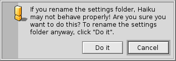
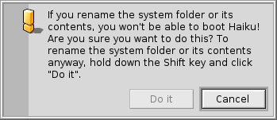

Файловая система Haiku достаточно прозрачна, в которой по-возможности используются нешифрованные имена для файлов и каталогов, не заставляющие пользователя ломать голову над ними. Файлы и каталоги важные для функционирования системы защищены от нечаянного изменения отображением одного их этих предупреждений:
 Второе предупреждение выскакивает, если вы пытаетесь переименовать или удлаить что-либо в системной иерархии. Здесь, кнопка "Do it" будет кликабельна только если зажата клавиша SHIFT.
В основном, это три отдельных ветки расположившиеся в корневом каталоге загрузчного раздела:
| /boot/beos/ | принадлежит системе. Не трогать! | |
| /boot/common/ | содержит файлы разделяемые между пользователями. | |
| /boot/home/ | это ваш персональный каталог, где вы храните данные и настройки. |
Системный каталог - /boot/beos/
По-факту он называется "beos" показывающая родство Haiku и BeOS.
Он не был перименован по причине обратной совместимости с BeOS.
Как бы он ни назывался вам не стоит менять его содержимое. Каждое обновление Haiku может добавлять, удалять или перезаписывать всё, что находится в нём.
Если вы хотите добавить функционал, может быть новые Tracker Add-On-ы или трансляторы, а равно новый драйвер, вам следует устанавливать их в мерархии вашего собственного /boot/home/, а для использования всеми пользователями в /boot/common/.
До тех пор как Haiku однопользовательская эти различия не имеют никакого эффекта, т.к. у нас только один пользователь с одним каталогом home.
Но так как будет поддержка более чем одного пользователя одновременно, имеет смысл сразу учиться делать правильно.
Допутисм вы хотите установить новый Translator для новейшего формата картинок, нельзя просто копировать его в соответсвующий системный каталог. Запомни: Не трогай!
Вместо этого поместитте его в зеркалированную иерархию в /boot/common/ или /boot/home/config/.
В нашем примере расположение для Translator-ов в системном каталоге будет
/boot/beos/add-ons/Translators/
А зеркальный каталог или
/boot/home/config/add-ons/Translators/
или
/boot/common/add-ons/Translators/
Всё это не просто так: если установленный вами компонент нарушил что-либо (а это возможно при установке драйверов оборудования, также) у вас будет возможность выбрать "Disable User Add-Ons" из меню Загрузчика и это позволит нам всегда загружатся без отключенных компонет.
Большую часть времени, как правило, вам вообше не придётся использовать эти знания, т.к. каждая программа полученная из доверенных источников должна иметь процежуру установки, которая занимается этими вещами.
Основной каталог - /boot/common/
Haiku пока что не многопользовательская система. Но когда она ей станет, у каждого пользователя будет свой каталог home недоступный никому другому. Каждое приложение или добавденный компонент, навроде Tracker Add-On-ов, Translator-ов и т.д. точно также как любые данные разделяемые месжду пользователями, переходят сюда.
Домашний каталог - /boot/home/
Этот каталог принадлежит вам. Здесь вы можете создавать и удалять файлы и каталоги как вам вздумается. Однако, не переусердствуйте с директорией ~/config/ и её подкаталогами. Вы можете удалить например каталог ~/config/settings/ без повреждения операционной системы, но кто зачоет потерять все свои настройки приложений и конфигурацию? В любом случае, система предупредит вас вышеупомянутым предостережением.
Внутри каталога ~/config/add-ons/, который зеркально отражает системный каталог add-ons для дополнительных еомпонентов системы как описано выше, есть несколько других интересных каталогов. (Кстати, тильда ("~") это ярлык для вашего домашнего каталога, так что не необходимость постоянно писать "/boot/home/" в Terminal.)
| По-умолчанию, здесь хранится ваша почта. | ||
| ~/queries | Запросы хранятся, по-умолчанию 7 дней, в этом каталоге. | |
| ~/config/be/ | Снова BeOS-наследие, каталог be содержит то, что отображается в Меню Deskbar. Вы можете добавлять и удалять либо при помощи конфигурационной панели Deskbar либо помещая файлы, каталоги или ссылки в этот каталог напрямую. | |
| ~/config/bin/ | Дополняет системный каталог /boot/beos/bin/ и содержит все ваши утилиты командной строки. | |
| ~/config/boot/ | Здесь хранится UserBootscript, который выполнятся после загрузки системы, и UserShutdownscript, выполняемый перед тем как системы совершит все необходимые приготовления для безопасного завершения работы. | |
| ~/config/fonts/ | Просто скопируйте TrueType или Postscript шрифт в этот каталог и он сразу станет доступным. | |
| ~/config/settings/ | Этот каталого содержит настройки для всех приложений и некоторые конфигурационные файлы системы. Некторые приложения хранят свои настройки в своих подкаталогах, другие просто кладут конфигурационные файлы сюда. | |
| ~/config/settings/beos_mime/ | В этой MIME базе данных Haiku хранит все различные типы файлов и их настройки. | |
| ~/config/settings/kernel/drivers/ | Вот эти файлы настроек могут быть интересны. kernel позволяет выполнить некоторое низкоуровневое конфигурирование, как отключение SMP, активация serial debugging или включение расширенного управления питанием. Вы активируете строку конфигруации простым удалением символа комментария "#". Будьте осторожны! | |
| ~/config/settings/Tracker/ | Вот некоторые интересные подкатаорги: | |
| DefaultFolderTemplate/ | Показывают и arrange все атрибуты и размеры окон как вам угодно. Каждый новый каталог, созданный вами юужет использовать его шаблон. | |
| DefaultQueryTemplates/ | Вы можете определить раскладку окна результатов запросы для нескольких типов файлов. См. раздел Запрос: окно результата. | |
| Go/ | Положите ссылки на ваши избранные места сюда чтобы сделать их доступными, например в диалоге открытия и сохранения. См. раздел Пользовательский интерфейс Haiku: Избранные и недавние каталоги. | |
| Tracker New Template/ | Добавте шаблон любого типа файлов, который затем будет доступен из меню Tracker-а File | New.... См. раздел Tracker: работа с файлами. |